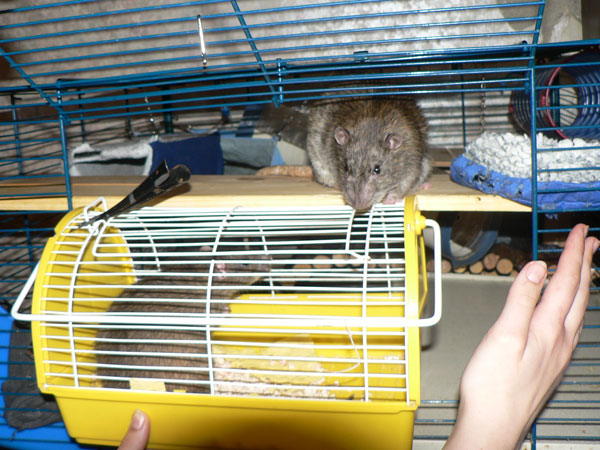
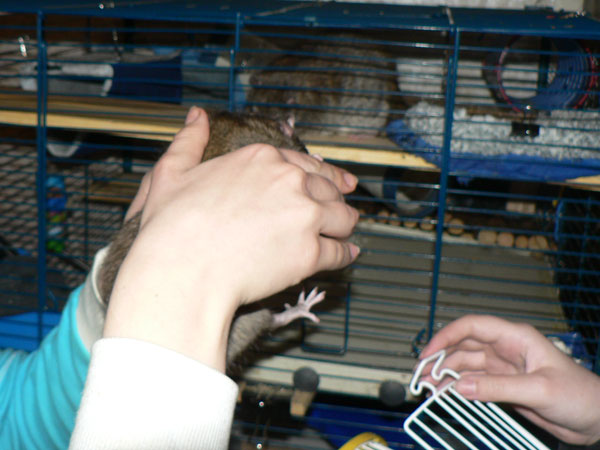
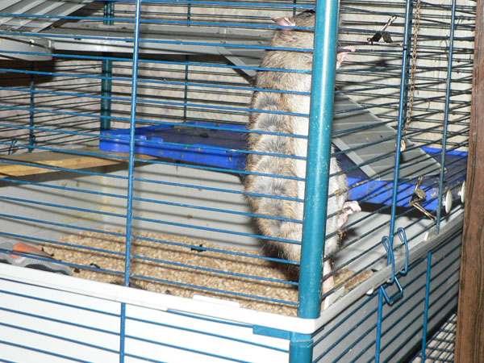
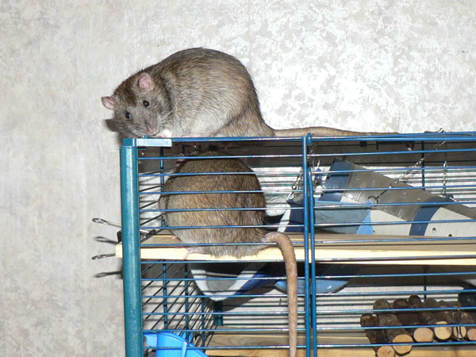
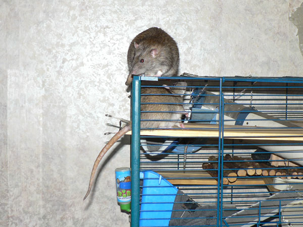

Иннокентий внимательно смотрит, что там такое принесли.

Интересно же, а вдруг что полезное?

— Можно в гости?

Арыся.

Таня: Пасюк сразу показал себя джентльменом. Удивительная штука инстинкты... Засунь к нему в клетку взрослого самца из чужой стаи — к настоящему времени он бы его, наверное, уже полностью доел. А на Арысю он не шипел даже в самом начале, когда ее показывали через решетку (хотя она шипела). Запустили внутрь — и тут начался цирк. |

Кеша лениво подошел к Арысе. Она резко завизжала. Кеша посмотрел на нее удивленно, как бы пожал плечами и так же лениво отошел. Однако Арыся не хотела, чтобы ее оставили в покое — она просто хотела, чтобы все видели, как она желает, чтобы ее оставили в покое. =) В результате она стала бегать за Кешей, так чтобы он все время оставался на небольшом расстоянии и видел, как она не желает знакомиться. |

|
Таня: Наконец получилась картина: Кеша лег спать в левом нижнем углу клетки. Арыся забилась в правый нижний угол, забралась по решетке как можно выше, и висела, пока у нее не разжались лапки и она не плюхнулась вниз. После этого она сидела в углу и смотрела на пасюка. Я ее пожалела, взяла рукой и перенесла в другой конец клетки, очень далеко от Кеши. И тут она бегом помчалась обратно, пробежала мимо пасюка и забилась все в тот же угол! Где снова стала усиленно "бояться". =) Потом, когда погасили верхний свет, они перебрались на одну полку и стали обнюхиваться. Причем Арыся не забывала кокетливо попискивать. Включили свет — пасюк стеснительно отошел в сторону. Тогда снова выключили, чтобы не мешать романтике... Утром стала их кормить — уже нормально вдвоем к миске подошли. ...Все-таки не зря на крысах проводят в том числе и психологические эксперименты. Как же они похожи на людей! =) |

Вот так и висела, пока не не надоело.

А на следующий день в гости приходил Терабайт.

Но его не пустили, так — пару раз получил лапой по наглой морде.

Вот такая крыска.

Любопытная. Посмотрим, получится ли что из пребывания в гостях...